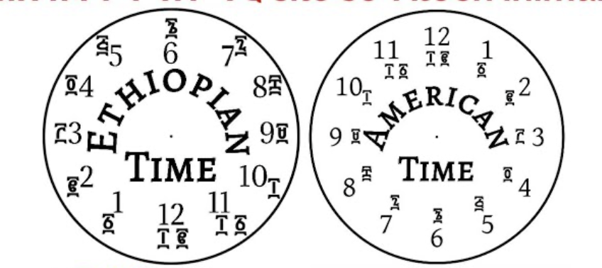
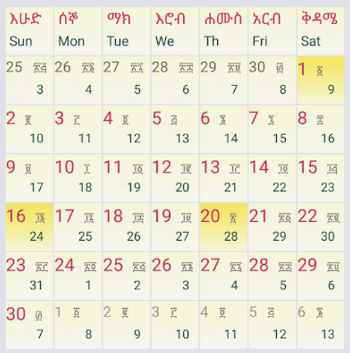
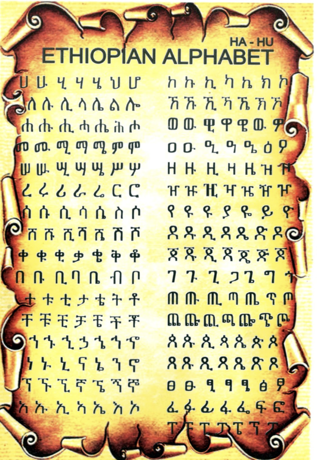

Facts about Ethiopia
Never colonized: Ethiopia is renowned for never been colonized. This remarkable feat is largely attributed to the resilience and strategic leadership of Emperor Menelik II. During the late 19th century, when European powers were scrambling to colonize Africa, Menelik II successfully defended Ethiopia against Italian forces in the Battle of Adwa in 1896.
Oldest Fossils: Ethiopia has yielded some of the oldest human fossils, including "Lucy" (Australopithecus afarensis), which is over 3 million years old and is one of the most significant discoveries in human evolutionary history.
Unique Time System: where the day is divided into 12 hours of daylight and 12 hours of nighttime, starting at sunrise. This means that 6 AM by Western standards is considered 12:00 in Ethiopian time, and 6 PM is 12:00 again in the evening. This traditional timekeeping method aligns with the natural day and night cycle, highlighting the country’s connection to its environment and traditional practices.
Ethiopia's unique calendar system The Ethiopian calendar, also known as the Ge'ez calendar, is based on the Coptic calendar and is approximately seven to eight years behind the Gregorian calendar used by most of the world. It consists of 13 months: 12 months of 30 days each and a 13th month called Pagumē with 5 or 6 days depending on whether it’s a leap year. The Ethiopian year begins in Meskerem, which falls around September 11th or 12th in the Gregorian calendar. This calendar system reflects Ethiopia’s distinct historical and cultural identity, influenced by its ancient Christian heritage.
Birthplace of Coffee According to the story, a goat herder named Kaldi noticed that his goats became unusually energetic and lively after eating the red berries from a particular shrub. Curious about this phenomenon, Kaldi sampled the berries himself and experienced a similar boost in vitality. He shared his discovery with a local monastery, where the monks used the berries to create a beverage that helped them stay awake during long prayers. This early coffee drink eventually spread to other regions, leading to the global appreciation of coffee we have today. Ethiopia’s rich coffee culture continues to be a source of national pride, with coffee ceremonies playing an important role in social and cultural traditions.
Ethiopia’s unique alphabet:, known as the Ge'ez script or Ethiopic script, is one of the oldest writing systems still in use today. Originating from the ancient Ge'ez language, the script is used primarily for Amharic, Tigrinya, and several other languages in Ethiopia and Eritrea. The Ge'ez script is distinctive because it is an abugida, where each character represents a consonant-vowel syllable rather than a single sound. The script consists of over 200 characters, with each base character modified to indicate different vowel sounds. For example, the character for “k” can change form to represent “ka,” “ke,” “ki,” “ko,” and “ku.” This script’s intricate and elegant design reflects Ethiopia’s rich linguistic and cultural heritage. The Ge'ez script has not only survived through centuries but continues to be a vital part of Ethiopia's educational and cultural identity, showcasing the country’s long history of literacy and scholarly tradition.
